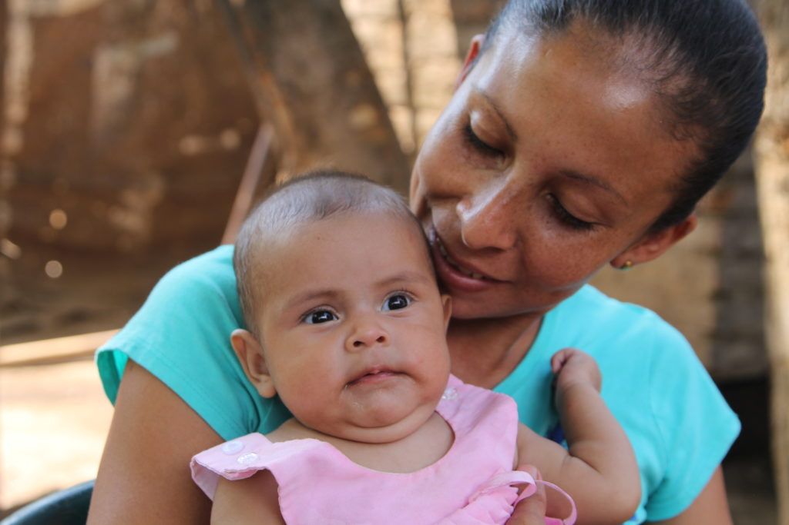

My mother name is Alemitu.my mother is house holder and she manege small bissnes such us house rent.

First of all, Mothers are precious gifts from God. Without mothers, life would certainly be dark and gloomy. Therefore, it is our duty to help and support our Mothers. One important way to do that is to help in chores. Individuals must try to do more household work. This would certainly reduce the burden of Mothers. Hence, this will also improve her health. Another way of supporting Mothers is to speak words of affirmation.
Mothers share a deep connection with their children. This connection certainly cannot be matched by anyone else. Even fathers fail to establish that type of understanding. The origins of this connection happen from infancy. Most noteworthy, a Mother can understand her infant child without communication. This certainly develops a strong emotional connection between a mother and child. This bond seems to carry into adult life. A Mother, it seems like, can always tell when we are feeling hungry.